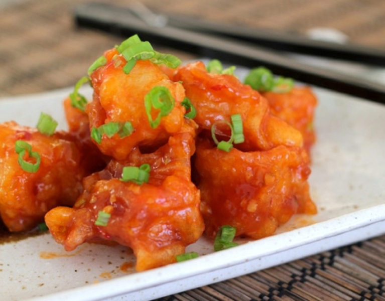
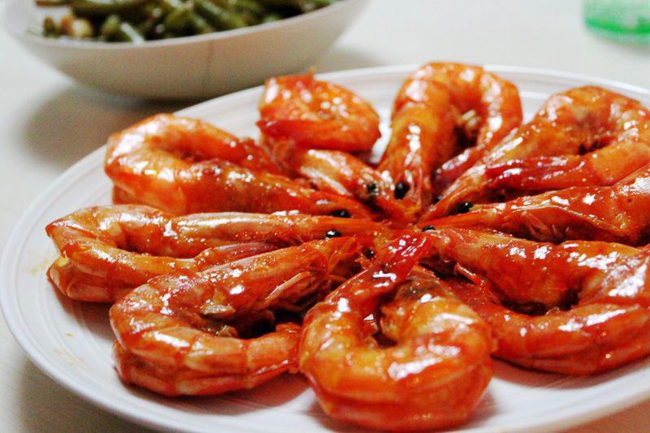

Tôm Sốt Chua Ngọt
Tôm Sốt Chua Ngọt là món ăn quen thuộc và được yêu thích trong các bữa cơm gia đình Việt, nổi bật với hương vị hài hòa giữa vị chua thanh, ngọt dịu, mặn mà và cay nhẹ. Tôm tươi được sơ chế kỹ lưỡng, giữ nguyên độ dai ngọt tự nhiên, sau đó được áo đều bởi lớp sốt chua ngọt sánh mịn, đậm đà. Món ăn này không chỉ hấp dẫn về hương vị mà còn có màu sắc bắt mắt, kích thích vị giác, rất thích hợp để ăn kèm với cơm trắng.



Nguyên liệu
- Tôm tươi: 500g (chọn tôm sú, tôm thẻ hoặc tôm càng xanh, tươi sống, kích thước vừa phải).
- Hành tây: 1 củ nhỏ (khoảng 80-100g), bóc vỏ, thái múi cau hoặc hạt lựu.
- Tỏi: 2-3 tép, bóc vỏ, băm nhỏ.
- Ớt chuông xanh: 1/2 quả (tùy chọn, thái miếng vuông vừa ăn).
- Ớt chuông đỏ: 1/2 quả (tùy chọn, thái miếng vuông vừa ăn).
- Cà chua: 2 quả vừa, rửa sạch, thái múi cau hoặc hạt lựu.
- Tương cà: 2 muỗng canh.
- Tương ớt: 1 muỗng canh (điều chỉnh tùy độ cay mong muốn).
- Đường: 2-3 muỗng canh (điều chỉnh theo khẩu vị).
- Nước mắm: 1.5-2 muỗng canh.
- Nước cốt chanh tươi: 1 muỗng canh (hoặc giấm gạo, để tạo vị chua thanh).
- Nước lọc: 50-80ml.
- Dầu ăn: 2-3 muỗng canh.
- Hành lá: 2-3 nhánh, rửa sạch, thái khúc.
- Rau mùi (ngò rí): Một ít, rửa sạch, thái nhỏ để trang trí.
- Bột năng (hoặc bột bắp): 1 muỗng canh (hòa với 2 muỗng canh nước lọc để tạo độ sánh cho sốt).
- Gia vị ướp tôm: Một chút muối, tiêu xay.
Cách làm
-
Bước 1: Sơ chế tôm
- Tôm rửa sạch. Bóc vỏ tôm (có thể giữ lại phần đuôi để tôm đẹp mắt hơn), bỏ đầu, rút chỉ đen ở lưng.
- Để tôm được giòn và đẹp mắt hơn, bạn có thể lăn tôm qua một lớp bột mỏng (bột năng hoặc bột chiên giòn) rồi chiên sơ qua dầu nóng cho tôm vừa chuyển màu hồng cam, săn lại. Vớt ra để ráo dầu. Nếu không thích chiên, bạn có thể bỏ qua bước này và xào trực tiếp tôm ở bước 4.
- Ướp tôm đã sơ chế với một chút muối và tiêu xay.
-
Bước 2: Sơ chế rau củ
- Hành tây bóc vỏ, thái múi cau hoặc hạt lựu.
- Tỏi bóc vỏ, băm nhỏ.
- Ớt chuông xanh và đỏ (nếu dùng) rửa sạch, bỏ hạt, thái miếng vuông vừa ăn.
- Cà chua rửa sạch, thái múi cau hoặc hạt lựu.
- Hành lá, rau mùi rửa sạch, thái khúc.
-
Bước 3: Làm sốt chua ngọt
- Đặt chảo lên bếp, cho 1 muỗng canh dầu ăn vào đun nóng.
- Phi thơm tỏi băm.
- Cho cà chua thái hạt lựu vào xào đến khi mềm và ra nước.
- Thêm tương cà, tương ớt, đường, nước mắm, nước cốt chanh (hoặc giấm gạo) và 50-80ml nước lọc vào chảo. Khuấy đều hỗn hợp.
- Đun sôi sốt, sau đó hạ lửa nhỏ và nêm nếm lại cho vừa khẩu vị chua, ngọt, mặn, cay hài hòa.
- Từ từ đổ chén bột năng đã hòa tan với nước lạnh vào sốt, vừa đổ vừa khuấy đều liên tục để sốt sánh lại từ từ và không bị vón cục. Đun thêm khoảng 1-2 phút cho sốt sôi nhẹ và trong.
-
Bước 4: Xào tôm và rau củ với sốt
- Trong một chảo khác (hoặc dùng chảo vừa làm sốt, lau sạch), cho 1 muỗng canh dầu ăn vào.
- Cho hành tây và ớt chuông (nếu dùng) vào xào nhanh tay khoảng 2-3 phút cho rau củ vừa chín tới, vẫn giữ được độ giòn.
- Cho tôm đã chiên sơ (hoặc tôm tươi đã ướp) vào chảo rau củ, đảo đều.
- Đổ phần sốt chua ngọt đã làm vào chảo tôm và rau củ. Đảo đều nhẹ nhàng để sốt bám đều vào tôm và rau củ. Đun nhỏ lửa khoảng 2-3 phút cho tôm và rau củ thấm sốt. Không đun quá lâu sẽ làm tôm bị dai.
-
Bước 5: Hoàn thiện và thưởng thức
- Tắt bếp. Rắc hành lá và rau mùi thái nhỏ lên trên.
- Gắp tôm sốt chua ngọt ra đĩa.
- Dùng nóng với cơm trắng rất ngon.
Mẹo nhỏ để Tôm Sốt Chua Ngọt ngon hơn:
- Chọn tôm: Chọn tôm tươi sống, vỏ bóng, thân cong, không có mùi lạ để đảm bảo độ ngọt và dai của tôm.
- Sơ chế tôm: Rút chỉ đen ở lưng tôm giúp tôm sạch hơn và khi ăn không bị sạn.
- Chiên sơ tôm: Bước chiên sơ tôm giúp tôm có màu sắc đẹp hơn, giữ được độ giòn và không bị teo lại khi nấu sốt. Tuy nhiên, nếu không thích chiên, bạn có thể xào trực tiếp tôm.
- Tỷ lệ sốt: Tỷ lệ nước mắm, đường, chanh/giấm, tương cà, tương ớt có thể điều chỉnh tùy theo khẩu vị chua, ngọt, mặn, cay của gia đình bạn.
- Tạo độ sánh: Luôn hòa bột năng/bột bắp với nước lạnh trước khi cho vào sốt và đổ từ từ, khuấy đều để tránh sốt bị vón cục.
- Thời gian nấu: Không nấu tôm quá lâu trong sốt vì tôm sẽ bị dai và mất đi độ ngọt tự nhiên. Chỉ cần đảo đều cho sốt bám vào là đủ.
- Rau củ: Bạn có thể thêm các loại rau củ khác như dứa (thơm), dưa chuột, hoặc hành tây tím để tăng màu sắc và hương vị cho món ăn.
- Dùng nóng: Món tôm sốt chua ngọt ngon nhất khi ăn nóng hổi với cơm trắng.
▶️ Xem video hướng dẫn chi tiết
← Quay lại trang chủ
Bình luận và Đánh giá
Đánh giá của bạn
Chưa có bình luận nào.